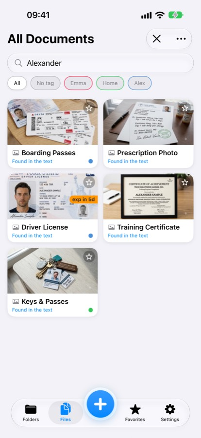
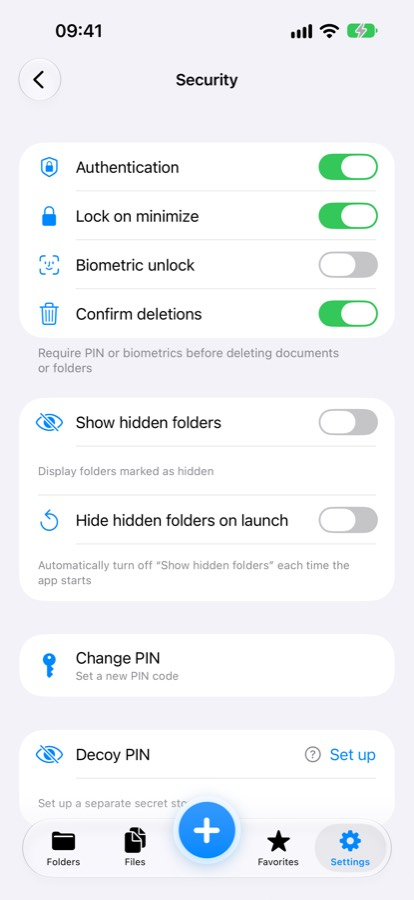

Найдите документ по любому слову в нём
Номер, фамилия, строка со страницы — поиск находит паспорт, договор или чек, в котором это написано, а не только тот, что так назван.
Документы, которые действительно нужны, включая гарантии и чеки, — в одном приложении, в том порядке, в каком вы о них думаете, и зашифрованы на вашем устройстве. У Docsly нет ни аккаунта, ни сервера.

Новое в Docsly 1.4
Распознавание текста работает на устройстве, без интернета. Распознанный текст не покидает его и хранится зашифрованным, как и сами документы.
Номер, фамилия, строка со страницы — поиск находит паспорт, договор или чек, в котором это написано, а не только тот, что так назван.

Docsly находит поля паспорта или ID-карты — номер, имена, даты, — и вы копируете их, а не перепечатываете. Поле отмечается как проверенное, когда сходятся контрольные цифры машиночитаемой зоны.
Читаются и водительские права США, Канады и Европы.

За месяц до окончания срока паспорта, ID-карты или прав на их карточке видно, сколько дней осталось. Docsly напомнит за 30, 10 и 3 дня, в день окончания и на следующий день.

Распознавание текста, поля и напоминания о сроке — в Docsly 1.4 для iPhone и iPad. На Android они появятся со следующим обновлением.
Каждый день
А не ещё одна лента фотографий, которую надо пролистывать.
Для себя, семьи и работы — у каждого свои документы, папки и теги.
Папки внутри папок любой глубины. Теги по членам семьи, избранное для самых нужных.
Рядом в одной папке. Несколько фото становятся одним документом — альбомом, а не россыпью.
Снимайте камерой, импортируйте из «Фото» и «Файлов» или отправляйте в Docsly из меню «Поделиться» другого приложения.
Соберите несколько фотографий в один PDF, готовый к отправке.
Документ или папка со всей структурой в пару касаний — или файлом .docsly, который откроет другой Docsly, с паролем, если вы его задали.
Приватность
Содержимое документов шифруется на устройстве по AES-256. Ключ защищён связкой ключей iOS (Keychain) или Android KeyStore и не покидает устройство.
